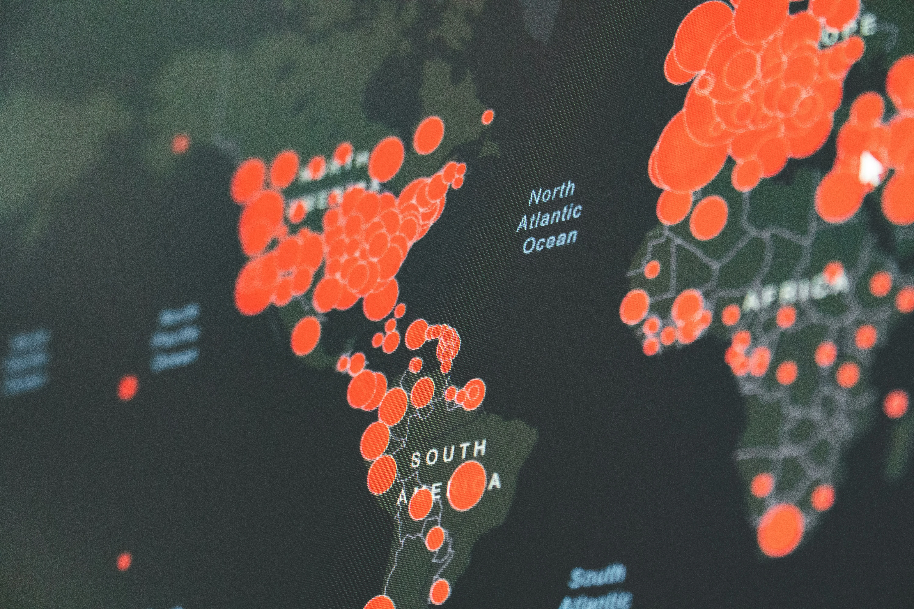

Deprem, yer kabuğunu oluşturan levhaların hareketleri sonucu oluşan enerji boşalmalarıdır. Ülkemiz Türkiye, jeolojik yapısı gereği dünyanın en aktif deprem kuşaklarından biri olan Alp-Himalaya Deprem Kuşağı üzerinde yer alır. Bu gerçek, deprem riskini hayatımızın bir parçası haline getirmiştir. Ancak sismik risk, sadece korkulacak bir durum değil, yönetilmesi ve hazırlanılması gereken bir doğa olayıdır.
Hızlı Bilgi: Türkiye'de Neden Çok Deprem Oluyor?
Türkiye, kuzeyde Avrasya Levhası, güneyde ise Arap ve Afrika Levhaları arasında sıkışmış durumdadır. Arap Levhası'nın kuzeye doğru itmesi, Anadolu topraklarını batıya doğru kaymaya zorlar. Bu hareketlilik, Kuzey Anadolu Fay Hattı ve Doğu Anadolu Fay Hattı gibi büyük kırıkların oluşmasına ve sık sık enerji boşalmasına (deprem) neden olur.
Deprem Nedir ve Nasıl Oluşur?
Yer kabuğu (litosfer), dev yapboz parçaları gibi levhalardan oluşur. Bu levhalar sürekli hareket halindedir. Birbirlerine sürtündükleri, çarpıştıkları veya ayrıldıkları sınırlarda gerilim birikir. Bu gerilim, kayaçların dayanma sınırını aştığında aniden kırılır ve sismik dalgalar yayılır. Yeryüzünde hissettiğimiz sarsıntı, işte bu dalgaların sonucudur.
Türkiye'nin Ana Fay Hatları

1. Kuzey Anadolu Fay Hattı (KAF)
Dünyanın en aktif ve en iyi bilinen doğrultu atımlı faylarından biridir. Bingöl Karlıova'dan başlar; Erzincan, Tokat, Amasya, Bolu, Adapazarı ve İzmit üzerinden Marmara Denizi'ne girer ve Saros Körfezi'ne kadar uzanır. 1939 Erzincan (7.9) ve 1999 Gölcük (7.4) depremleri bu hat üzerinde gerçekleşmiştir. Yaklaşık 1200 km uzunluğundadır.
2. Doğu Anadolu Fay Hattı (DAF)
Bingöl Karlıova’da KAF ile kesişerek başlar ve Bingöl, Elazığ, Malatya, Kahramanmaraş üzerinden Hatay’a kadar iner. Buradan Ölü Deniz Fay Hattı ile birleşir. 2023 Kahramanmaraş depremleri (7.7 ve 7.6), bu hattın ne kadar büyük bir enerji biriktirdiğini göstermiştir.
3. Batı Anadolu Fay Hattı (BAF)
Ege Bölgesi'ndeki (İzmir, Aydın, Manisa, Muğla) "graben" adı verilen çöküntü alanlarından oluşur. Bu bölgedeki faylar genellikle daha kısa parçalıdır ancak çok sıktır. KAF ve DAF'tan farklı olarak, buradaki hareket genellikle "açılma" yönündedir.
Tarihsel Büyük Depremler
- 1939 Erzincan Depremi (Ms 7.9): Türkiye tarihinin en yıkıcı depremlerinden biridir. 33.000'e yakın vatandaşımız hayatını kaybetmiştir.
- 17 Ağustos 1999 Gölcük Depremi (Mw 7.4): Marmara bölgesini vuran bu felaket, Türkiye'nin deprem yönetmeliklerinin ve bilincinin değişmesinde milat olmuştur.
- 2011 Van Depremi (Mw 7.2): Doğu Anadolu'da yapı stokunun önemini bir kez daha ortaya koymuştur.
- 6 Şubat 2023 Kahramanmaraş Depremleri (Mw 7.7 - 7.6): "Asrın Felaketi" olarak nitelendirilen bu depremler, 11 ili ve milyonlarca insanı etkilemiştir.
Depreme Nasıl Hazırlanmalıyız?
Fay hatlarını değiştiremeyiz, ancak binalarımızı ve önlemlerimizi değiştirebiliriz. İşte temel adımlar:
Üç Altın Kural
- Sağlam Bina: Oturduğunuz binanın zemin etüdü ve deprem dayanıklılığı hakkında bilgi edinin.
- Eşya Sabitleme: Evdeki dolap, raf, avize gibi eşyaların sarsıntıda devrilmemesi için sabitleyin.
- Deprem Çantası: İlk 72 saat için gerekli malzemeleri içeren çantanızı hazır tutun. Deprem Çantası Listesi için tıklayın.
Deprem anında ise Çök - Kapan - Tutun tekniğini uygulamak hayat kurtarır. Koşmak, merdivenlere yönelmek veya balkona çıkmak en büyük hatalardır.
Sonuç
Bilim, depremin ne zaman olacağını söyleyemez ama nerede olabileceğini ve ne kadar büyük olabileceğini söyler. yakınımdakideprem.com olarak amacımız, bu bilimsel veriler ışığında anlık takibi kolaylaştırmak ve bilinci artırmaktır. Anlık durumlar için sitemizin Son Depremler sayfasını takip edebilirsiniz.